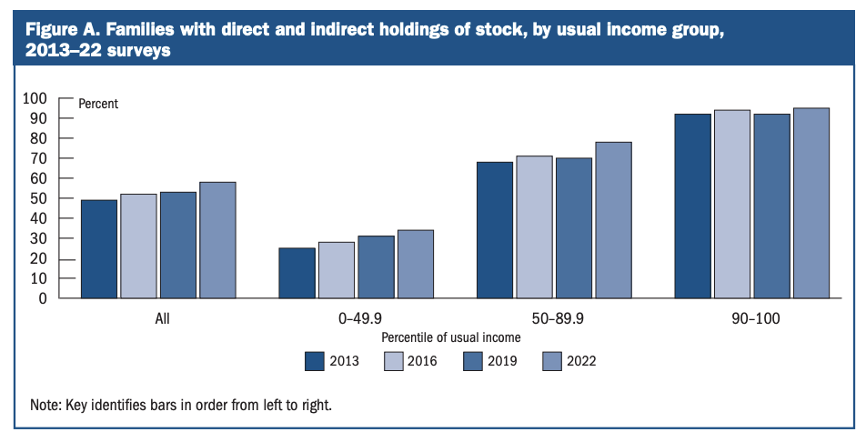

How do patterns of investment spending in the United States differ across income groups, and how might these differences affect long-term quality of life and wealth inequality trends?
Our project bridges the gap between income inequality's present-day impacts and future prospects through the lens of investment spending, consumer expenditures, and trends. While most analyses of inequality focus on what people earn today, we ask: what are they building for tomorrow?
By examining BLS Consumer Expenditure data alongside Federal Reserve survey data on retirement and stock ownership, we map the structural divergence in how different income classes allocate resources — and how those allocations compound over time into vastly different futures.
Our project views quality-of-life differences through the lens of Data Feminism, as developed by D'Ignazio and Klein. Their central claim — that data is never a neutral distributor of meaning, but always shaped by structural forces — anchors our interpretive approach.
We highlight the hidden narratives within our data and are attentive to both the surface patterns and the deeper implications of what the data indicates and, crucially, what it omits. Race, for instance, is absent from our primary dataset — a limitation we address explicitly rather than paper over.
We also draw on Hepworth and Church's framework for ethical data visualization, applying it to decisions about axis scales, category aggregation, and chart structure.
Our primary source is the Bureau of Labor Statistics Consumer Expenditure Survey (CEX) 2024, which tracks how American households allocate spending across categories such as housing, food, transportation, education, healthcare, entertainment, and pensions. The survey is stratified by income bracket, enabling direct comparison of spending share distributions across the income spectrum.
We supplement the CEX with the Federal Reserve's Survey of Consumer Finances (2022), which captures data on stock ownership, retirement plan participation, and asset accumulation — metrics that are not available in the spending-focused CEX but are essential to understanding investment behavior at higher income levels.
header=None and manually extracted income bracket labels from row 2, renaming them to shorter versions (<$15k, $15–29k, etc.) for chart readability.c/ (suppressed or confidential data) were dropped rather than imputed. No values were fabricated or estimated.Income inequality is deeply connected to the structure of the U.S. economy and the uneven distribution of income, assets, and investment opportunities. While the immediate impacts of income inequality can be reflected in different levels of consumer expenditure, our project focuses on the future trends caused by income inequality. Our data from the Bureau of Labor Statistics contains surveys about consumer expenditures, and surveys from the Federal Reserve are focused on investment spending. This project seeks to answer these questions: how do patterns of investment spending in the United States differ across income groups, and how might these differences affect long-term quality of life and wealth inequality trends?
Investment spending patterns aren't immediately obvious in the data. Complexity in determining if a certain item is "investment spending" can be seen in "housing". Housing spending can be both in spending on rent or on mortgage debt. The difference between these two in this context is that while rent is purely an expense, expenditures on mortgage payments appreciate in the form of property. Furthermore, mortgage debt payments can be expensed under US tax policy, and therefore, the impacts on both current quality of life and future prospects are significantly different between expenditure choices. The trend as followed by Visualization 2 below highlights the decreasing proportion of housing spending. This shows the conceptual shift in housing as a financially dominant necessity, to an investment vehicle. This concept is additionally supported by a survey by Pew Research Center, which claims that home owners tend to be more wealthy than renters.
Another key observation is in education spending. Education is one of the most significant financial investments for many Americans. Many families save for college, and many newly admitted students entertain the idea of student debt. The trend for education spending as shown by Visualization 2 introduces an inverse bell curve. This trend follows the idea that income varies proportionally with education. While education spending is decreasing between our lowest and median income brackets, it begins to increase between our median and highest income bracket, which indicates that wealthier households prioritize education. On the topic of education,
Pension and personal insurance spending highlights a noteworthy trend. The increasing proportion families spend on pensions and personal insurance underscores the significance in gains. Many companies in the world offer employee match-back policies, which is essentially additional funding toward employee retirement. The increase in pension spending is increased even further by these policies, which means that the addition of compounding interest indicates the exponential wealth gap that continues to grow between lower and higher income households.
Events like the Great Recession and COVID 19 have intensified these trends, as highlighted in the digital humanities project The Income Gap. While financial crises spell panic for many Americans, wealthy households with large amounts of capital are benefited greatly. Investment opportunities are made more attractive with lower prices all around the board. Our government also encourages this notion, with prime interest rates changing depending on the state of the economy. This means more favorable debt and mortgage rates, and these rates carry over into the future.
Surprisingly, entertainment continues to remain the same across households. This shows an interesting trend, where with increasing income, households continue to invest, and the proceeds of the investment are reinvested. This means that families aren't simply spending their money, but rather, the wealth generated through investment will be placed with their children. This encourages the wealth gap, where their children may be able to live off their parent's proceeds, and so on.
Taking all the above into consideration with respect to racial representations in each income class can generate critical insights. Given that different income classes have disproportionate representations of races, the difference in quality of life between the income classes means even greater differences in quality of life between different racial communities. While national survey data doesn't include races, pairing the data with other sources reveals concerning trends in the discussion of racial equality.
Stock ownership and retirement plan participation data can be found in the Federal Reserve's survey data. Different portfolios have different returns, and accounting for the various differences in returns between portfolios adds a level of complexity beyond the scope of this project. In the visualization below, we use the average return of the S&P 500 index fund for all income classes. This visual shows that, even if all annual returns are the same among income classes, the effect of compounding intensifies the widening gap between income classes. The difference in wealth of a single generation compounds onto the next, regardless of differences in returns. The very last column is both grimmer and closer to reality as it includes the differences in returns given the exclusive investment options to certain families based on income. In this final column, we adjusted returns from 7% in all other columns to 15%, and the next passage explains this adjustment.
One point of interest during our project's discussion was the analysis on exclusive investment options to the wealthy. Of these options, hedge funds and quantitative trading firms were at the forefront of our inquisition, as they have funds exclusive to people of a certain net worth. Spending data specifically for these investment options is not open source. However, simply taking the returns of these funds, being between 10-20%, and simulating it in the visual above, demonstrates how exclusive opportunities to the wealthy continue to widen the already massive gap in investment returns.

This chart shows what share of U.S. families own stock — either directly (individual shares) or indirectly (through retirement accounts, mutual funds, and similar vehicles). Stock ownership rises sharply with income: in 2022, about 34% of families in the bottom half of the income distribution held stock, compared with 78% in the 50th–89.9th percentile and 95% in the top 10%.
While the above analysis assumed stock ownership in all income groups, survey data by the Federal Reserve shows the drastic differences in stock ownership percentage based on income. This shows that the wealth gap is even more severe, with some families having no gains from public stock ownership.
Data feminism argues against the notion that data is neutral. Rather, data is a perpetuator of structural imperfections. Even in this data can we find structural bias that, regardless of intention, hides the extreme differences in lived experiences. For instance, survey data only captures spending up til the 200k annual income. For this reason, analysis on the wealth gaps between income brackets doesn't include higher income brackets, which can delude the implied truth: that the gap is even wider than we see now. Furthermore, equity spending isn't included in the Bureau of Labor Statistics, and this was a highly contested point in wealth gap discussion. This is due to the different taxation policies and government interpretations of equity ownership. One impact of this is the different tax rates that ultra wealthy households (Musk, Zuckerberg, etc.) pay compared to most households, which for comparison, instead of paying 37% in taxes, they pay closer to 20%. To briefly explain, this difference is the "capital gains" tax rate, compared to the income tax rate. Ultra wealthy families are able to arrange their finances such that they are only subject to the lowest rates possible. Data on this analysis is difficult to find, and even when spending surveys are released, their income groups of interest do not include the ultra rich, which contributes to the notion that data is a perpetuator of the structural gaps that continue to maintain an increasingly dangerous status quo.
This project ventured to answer the following questions: How do patterns of investment spending in the United States differ across income groups, and how might these differences affect long-term quality of life and wealth inequality trends? The differing investment behaviors across income groups boiled down to increased education spending, increased pension fund spending, and public stock ownership. The degree of increase in these categories show the prioritization of graduate schools and private tutor programs, and further investment in pension and other investment vehicles, compared to entertainment or other category spending, which remained relatively the same proportion across income groups. In this way, wealthy families prioritize widening the gap, and the utility of living experience increases ever so slightly in comparison to the massive jumps in investment spending.
A rising senior from San Francisco interested in business law and data. Mark serves as the project's primary researcher and lead writer, shaping the analysis and overall narrative of the project.
A rising junior studying Environmental Economics and Data Science. Kelly focuses on writing and on connecting the visualizations to the broader argument about income inequality and access to consumer expenditures.
A rising senior studying Data Science and Computer Science. Baijian prepared datasets for visualizations and led development of the project website.
A Data Science student interested in business analytics, inequality, and data storytelling. Alica collaborates on the writing process with a focus on transparency in data cleaning, visualization clarity, and the distortions that can emerge when inequality data is oversimplified.
A rising senior studying Data Science. Angela collaborates with Baijian on data visualization and website development, translating complex expenditure data into legible, compelling charts.